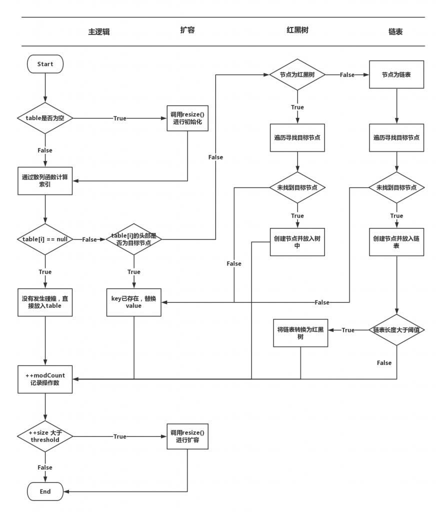

前言
Map与List是我们日常开发中经常会用到的用于存放数据的容器，与list不同的是map采用key/value的数据结构。而map的实现类中最常用的就是HashMap了，对应的在多线程场景下一般会推荐使用ConcurrentHashMap
HashMap
hash
在看HashMap之前，我们先了解下什么是hash:
Hash: 一般翻译做“散列”，也有直接音译为“哈希”的，就是把任意长度的输入，通过散列算法，变换成固定长度的输出，该输出就是散列值。
散列函数：若关键字为k，则其值存放在f(k)的位置上。因此，不用比较就可以直接通过key找到value。
碰撞: 再拓展下不管采用什么散列算法，都会出现两个不同的输入值，算出来的散列值是一样的，如果k1≠k2，而f(k1)=f(k2)，即对于不同的key得到了同一个散列地址，这种现象就叫做碰撞。一般碰撞的概率越小算法越优
对应的在java中Object对象都会有hashCode这个方法(java中默认所有的类都是继承于Object)，就是为每个对象都保留生成hash的方法
HashMap原理
先简单了解下HashMap的原理:
HashMap内部是由数组+链表+红黑树构成的(java8之前采用的是数组+链表)，采用红黑树是为了提高查询效率
是根据key而直接访问内存存储位置的数据结构。也就是说，它通过计算一个关于key的函数，将所需查询的数据映射到表中的一个位置来访问记录，这加快了查找速度。
这个映射函数称作散列函数，存放记录的数组称作散列表，也叫哈希表。
1 | transient Node<k,v>[] table |
transient: 在实现Serializable接口的对象中，将不需要序列化的属性前添加关键字transient，序列化对象的时候，这个属性就被忽略
put
当一个值需要存储到HashMap中时，HashMap会根据key值计算出他的hash，再将hash值通过计算转换为索引(数组下标)，将key和value存放对应位置:
- 当数组中对应位置没有值时，则直接将当前的 key、value 封装成一个Node，存放到数组中
- 当数组中对应位置存在值时(即发生了hash碰撞，又叫hash冲突了)，就会将当前的 key、value 封装成一个新Node写入到当前Node的后面(形成链表)，如果链表的值过长(默认8)会直接转换为红黑树(即TreeNode)
最后判断是否需要进行扩容(扩容的判断及扩容实现较复杂, 后面重点分析下)
数组下标的计算方式为：通过对key hash然后与数组长度-1进行与运算((n-1)&hash) (都是2的次幂所以等同于取模，但是位运算的效率更高)，找到数组中的下标
链表长度低于6，会把红黑树转回链表

get
当需要从HashMap中获取value值时，同样根据key计算hash和转换得到索引值，取出value:
- 当数组对应位置只有一个node时，判断是否是同样的key, 是则直接取出
- 当数组对应的位置存在多个时，判断是否是红黑树，是则按照红黑树的方式获取值，如果不是，则按照链表的方式遍历获取值
解疑
通过上面的描述，我们也就好理解了：
- 为什么HashMap的key不可以是基本数据类型了：因为需要hash计算
- 为什么HashMap的遍历会比List(ArrayList)慢：因为判断多且结构复杂(可能会遍历数组+链表或者红黑树)
通过HashMap的hash方法:
1 | static final int hash(Object key) { |
也可以得出结论，HashMap是允许key为空的
有序的HashMap
由于HashMap是通过hash计算来得出存放位置的，故他是不能保证顺序的。如果需要有序的HashMap，使用LinkedHashMap：
LinkedHashMap属于HashMap的子类，与HashMap的区别在于LinkedHashMap保存了记录插入的顺序。TreeMap实现了SortedMap接口，TreeMap有能力对插入的记录根据key排序，默认按照升序排序，也可以自定义比较器，在使用TreeMap的时候，key应当实现Comparable(String默认已经实现了Comparable)
HashMap线程不安全?
首先HashMap先明确下，如果是在只读环境下，那HashMap是不存在线程不安全的，所以如果业务中的使用时先初始化好map，然后在不同线程内获取值的话，HashMap也是可以直接使用的。
那HashMap什么情况下会造成线程不安全呢？答案就是在每次put值之后会判断是否扩容，而如果并发情况下，扩容时可能会导致节点丢失(java8之前还可能造成环形链表导致死循环)等问题，所以才说HashMap是线程不安全的
在jdk1.7中，由于扩容时使用头插法，在并发时可能会形成环状列表，导致死循环，在jdk1.8中改为尾插法，可以避免这种问题，但是依然避免不了节点丢失的问题
ConcurrentHashMap
与HashMap类似，ConcurrentHashMap也采用了数组+链表+红黑树的方式，并使用volatile关键字来保证获取时可见性，采用了CAS + synchronized 来保证并发安全性(java8之前采用的是Segment 分段锁)
1 | transient volatile Node<K,V>[] table; |
ConcurrentHashMap并不是直接继承自HashMap，而是继承了和HashMap一样的父类AbstractMap。并且ConcurrentHashMap中的key和value都不可以为空!
put
put方法与HashMap有一些区别:
根据 key计算出hashcode(这里ConcurrentHashMap的hash是使用了spread,与HashMap稍有不同)，定位出Node：
- 如果为空表示当前位置可以写入数据，利用 CAS 尝试写入，失败则自旋保证成功
- 如果当前位置的 hashcode == MOVED == -1,则需要进行扩容
- 如果都不满足，则利用 synchronized 锁写入数据。
- 如果链表数量大于8则要转换为红黑树
ConcurrentHashMap VS HashTable
既然HashMap是线程不安全的，那在多线程场景下我们就可以选择HashTable或者ConcurrentHashMap了，在一般情况下推荐使用ConcurrentHashMap：HashTable在线程竞争比较激烈的情况下效率相对较低，因为他采用的是synchronized全局锁的方式，在一个线程操作时，其他线程都需要等待，不仅不能put也不能get。而ConcurrentHashMap使用了分段锁的技术来提高并发度，不在同一段的数据互相不影响，多个线程对多个不同段的操作是不会相互影响的。
值得一提的是java8对synchronized做了很多优化，java8中ConcurrentHashMap采用的分段锁从ReentrantLock改为了synchronized
当然HashTable也不是完全没有用了，相反由于采用了全局锁，使得每个线程获得的数据总是最实时的：比如说线程A调用putAll写入大量数据，期间线程B调用get，线程B就会被阻塞，直到线程A完成putAll，因此线程B肯定能获取到线程A写入的完整数据。相对应的ConcurrentHashMap 是设计为非阻塞的。在更新时会局部锁住某部分数据，但不会把整个表都锁住。同步读取操作则是完全非阻塞的。好处是在保证合理的同步前提下，效率很高。坏处是严格来说读取操作不能保证反映最近的更新。例如线程A调用putAll写入大量数据，期间线程B调用get，则只能get到目前为止已经顺利插入的部分数据。
应该根据自己的业务场景选择合适的HashMap
使用HashMap需注意的事项
默认情况下HashMap的初始容量为16，默认情况下，当其size大于12(16*0.75) 时就会触发扩容当达到扩容条件时会进行扩容，从16 扩容到32、64、128…
如果用户通过构造函数指定了一个数字作为容量，那么Hash会选择大于该数字的第一个2的幂作为容量。(3->4、7->8、9->16)
建议初始化HashMap的容量大小
如果我们没有设置初始容量大小，随着元素的不断增加，HashMap 会发生多次扩容，而HashMap中的扩容机制决定了每次扩容都需要重建hash 表，是非常影响性能的
项目使用时，如果引用了guava库直接使用Maps.newHashMapWithExpectedSize(x)即可，否则可以采用下面的算法来初始化:
1 | static int capacity(int expectedSize) { |
偶然间翻到HashSet的源码，HashSet内部通过维护一个HashMap来实现读取插入等功能，他对hashMap的初始化容量是这么写的：
1 | public HashSet(Collection<? extends E> c) { |
而面试题经常问到的HashSet的值为什么不能重复, 看看add方法实现就知道了:
1 | public boolean add(E e) { |
遍历方式选择
HashMap中可以看到:
1 | transient Set<Map.Entry<K,V>> entrySet; |
故如果有人再问哪张方式遍历效率更高，直接回答entrySet的方式：
1 | Map<String, String> map = new HashMap<>(3); |
当然如果项目是java8的直接采用Map.forEach
1 | Map<String, String> map1 = new HashMap<>(3); |
只有当只需要获取map的keys或values时，采用KeySet或者values代替entrySet
JUC中的concurrentMap
ConcurrentMap
它是一个接口，是一个能够支持并发访问的java.util.map集合。在原有java.util.map接口基础上又新提供了4种方法，进一步扩展了原有Map的功能：
1 | public interface ConcurrentMap<K, V> extends Map<K, V> { |
ConcurrentNavigableMap
它继承了NavigableMap和ConcurrentMap这两个接口子Map，就是两者功能的结合，既保证线程安全性，又提供导航搜索子Map视图的功能(视图就是集合中的一段数据序列)
ConcurrentSkipListMap
ConcurrentSkipListMap是ConcurrentNavigableMap的一个实现类。
ConcurrentSkipListMap的key是有序的, 所以在多线程程序中，如果需要对Map的键值进行排序时，请尽量使用ConcurrentSkipListMap，可能得到更好的并发度
其他
WeakHashMap
在Java集合中有一种特殊的Map类型—WeakHashMap，在这种Map中存放了键对象的弱引用，当一个键对象被垃圾回收器回收时，那么相应的值对象的引用会从Map中删除。WeakHashMap能够节约存储空间，可用来缓存那些非必须存在的数据
1 | @Test |
使用-Xmx2M限定堆内存，使用WeakHashMap的代码正常运行结束，而使用HashMap的代码段抛出异常：java.lang.OutOfMemoryError: Java heap space。由此可见，WeakHashMap会在系统内存紧张时使用弱引用，自动释放掉持有弱引用的内存数据。但如果WeakHashMap的key都在系统内持有强引用，那么WeakHashMap就退化为普通的HashMap，因为所有的数据项都无法被自动清理。